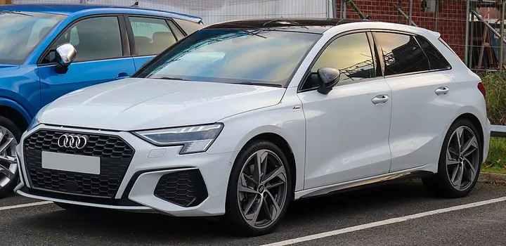

Audi A3
Fourth generation (Typ 8Y; 2020) · 2020–present
Duel
The Audi A3 (2020–present) against the Mercedes-Benz A-Class (2018–present). The Audi A3 Typ 8Y is 82 mm shorter and 89 mm shorter in wheelbase than the A-Class W177 (first figures given).
Cut-outs of the photos credited below (background removed).

Fourth generation (Typ 8Y; 2020) · 2020–present

Fourth generation (W177; 2018) · 2018–present
| Production | May 2020–present | April 2018 – present |
|---|---|---|
| Body | 5-door hatchback (Sportback)4-door saloon | 5-door hatchback4-door sedan |
| Layout | — | Front-engine, front-wheel-driveFront-engine, all-wheel-drive (4Matic) |
| Engines | 1.0 L EA211 CHYB turbo | Petrol:1.3 L M282 CGI I4 turbo2.0 L M260 I4 turbo2.0 L M139 AMG I4 turboPetrol plug-in hybrid:1.3 L M282 I4 turboDiesel:1.5 L OM608 BlueTEC I4 turbo |
| Electric motor | 48 Volt belt-drive alternator starter (MHEV)81 kW – 85 kW Permanent magnet AC synchronous motor | — |
| Battery | 13 kWh Li-ion | 15.6 kWh lithium-ion (Plug-in hybrid) |
| Gearbox | 6-speed manual MQ3507-speed S-tronic DQ381 | 6-speed manual (2018–2023)7-speed automatic8-speed automatic7-speed DCT8-speed DCT |
| Length | 4337 mm (sportback)4495 mm (sedan)4548 mm (A3L) | 4419 mm (hatchback)4549 mm (sedan)4622 mm (LWB sedan) |
| Width | 1816 mm | 1796 mm |
| Height | 1425 mm | 1440 mm (hatchback)1454 mm (sedan) |
| Wheelbase | 2640 mm (sportback)2636 mm (sedan)2680 mm (A3L) | 2729 mm2789 mm (LWB sedan) |
| Weight | 3639 lb RS3 | 1300–1445 kg1680 kg (Plug-in Hybrid) |
Sources: Wikipedia: Audi A3 · Wikipedia: Mercedes-Benz A-Class.
_%E2%80%93_f_16032019.jpg){kind=link}